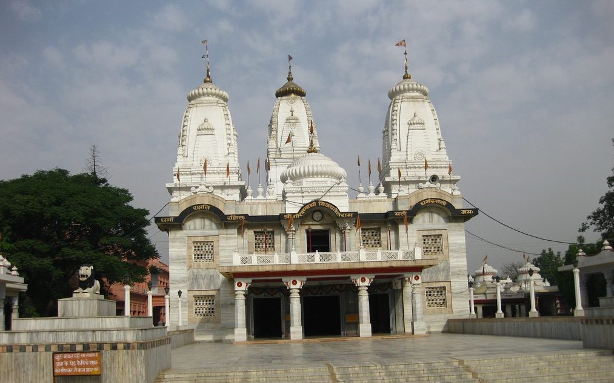

The Shri Gorakhnath Mandir is a temple of the Nath monastic order group of the Nath tradition. The name Gorakhnath derives from the medieval saint, Gorakshanath (c. 11th century), a yogi who travelled widely across India and authored a number of texts that form a part of the canon of Nath Sampradaya.[1] The Nath tradition was founded by guru Matsyendranath. This math is situated in Gorakhpur, Uttar Pradesh, India within large premises. The temple performs various cultural and social activities and serves as the cultural hub of the city.
Gorakhpur takes its name from Gorakhnath, who was a saint of the 'Nath Sampradaya'. A shrine called Gorakhnath Mandir was built in his honour at the location where he did his Sādhanā. The Gorakhpur region comprises the districts of Maharajganj, Kushinagar, Deoria, Azamgarh, Mau, Ballia and parts of Nepal Terai. These areas, which may be called the Gorakhpur Janapad, were an important centre of the Hindu Vedic culture.
Gorakhpur was a part of the kingdom of Kosala, one of the sixteen Mahajanapadas in the 6th century BC. The solar dynasty of Kshatriyas, whom are believed to have ruled the area, included Lord Rama. Gorakhpur remained an integral part of the erstwhile empires of the Maurya, Shunga, Kushan, Gupta and Harsha dynasties. The history of the math has also been described in the biography of Yogi Adityanath - The Monk Who Became Chief Minister, written by Shantanu Gupta. The website of Gorakhnath Mandir describes its history and the attacks which the temple had to bear from time to time.
Today's Gorakhnath Math, centred at Gorakhpur in eastern Uttar Pradesh (also named after the saint), is a religious institution that runs two Gorakhnath temples, one in Nepal in the district of Gorkha (another word believed to be derived from Baba Gorakhnath), and the other a little south of Gorakhpur. The temple at Gorakhpur is said to contain the samadhi shrine (transl. tomb) and gaddi (transl. prayer seat) of Gorakhnath. These temples constitute the centre of most of the Hindu religious activity in this region. Thousands of devotees come to these temples on the occasion of Makar Sankranti, when they offer khichdi to Gorakhnath Baba. The King of Nepal also occasionally visits one of these temples during this festival. The Gorakhnath Math has a significant following in eastern Uttar Pradesh and the Terai regions of Nepal, and also among wider circles across the Nath groups. The monastic order, according to the principles of saint Gorakhnath, does not follow caste conventions as other Hindu religious groups do. Thus, non-Brahmins may serve as priests. The present Mahant or Chief Priest is Yogi Adityanath. He was appointed Mahant on 14 September 2014. He was preceded by his guru, Mahant Avaidyanath, who died on 12 September 2014, and was given samadhi beside that of his guru Digvijay Nath in the Gorakhnath Temple